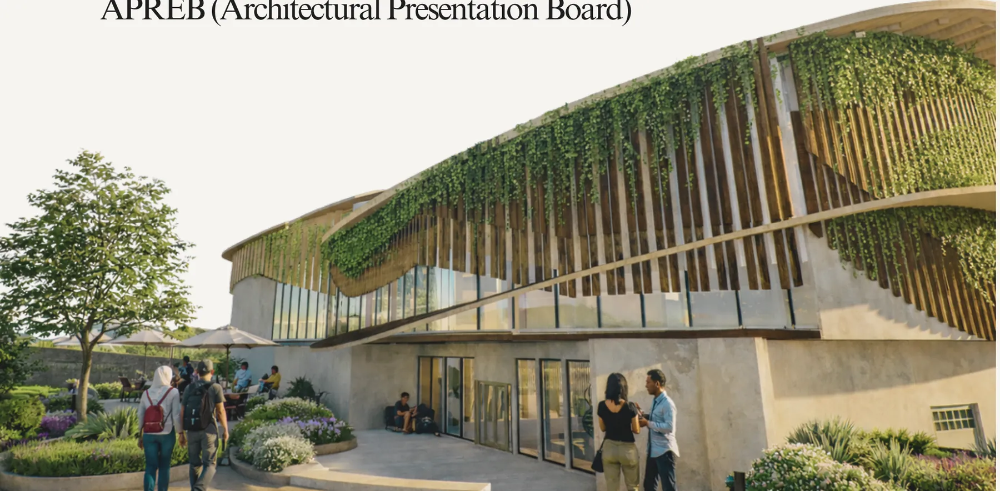
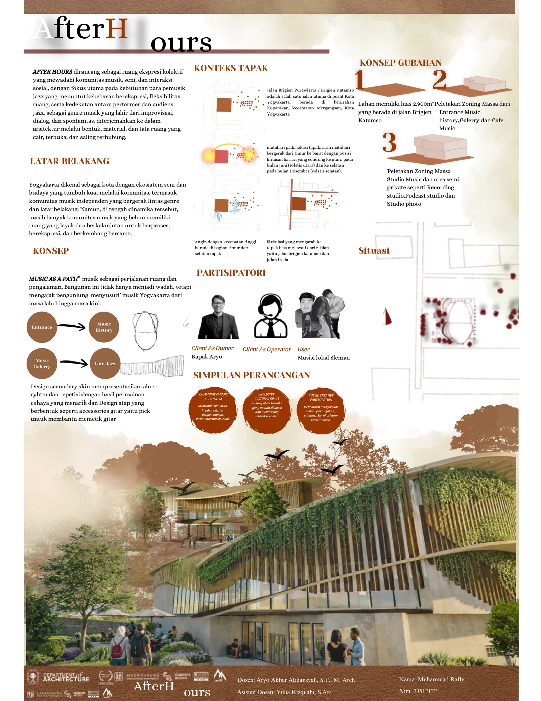
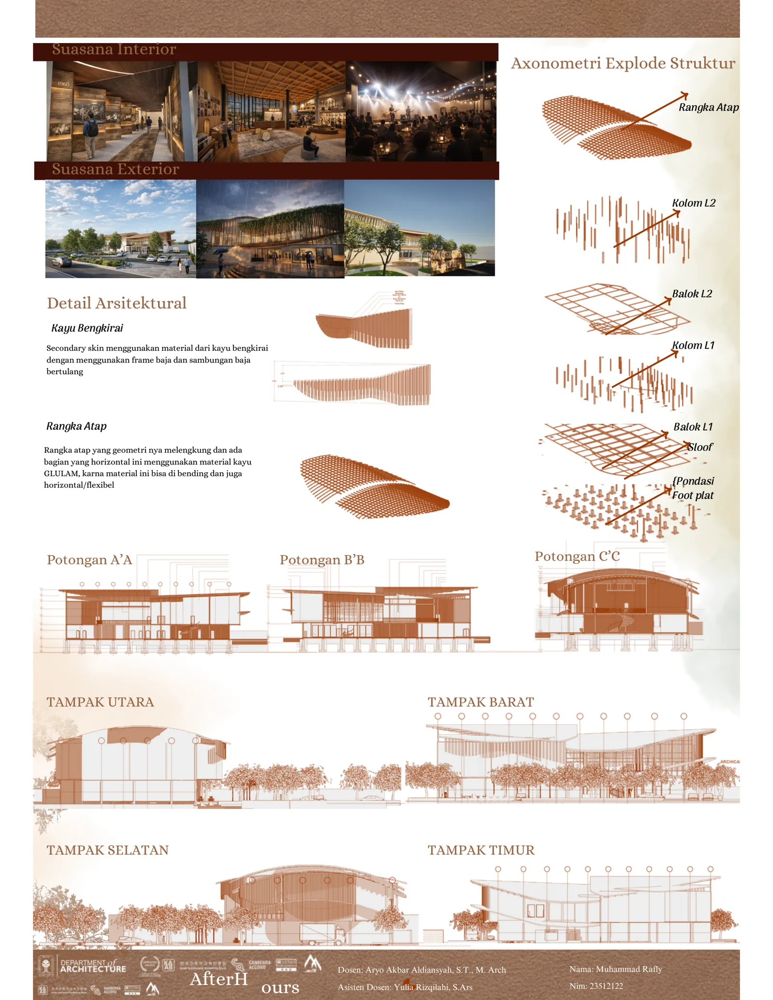
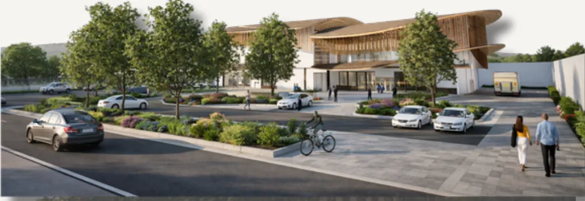
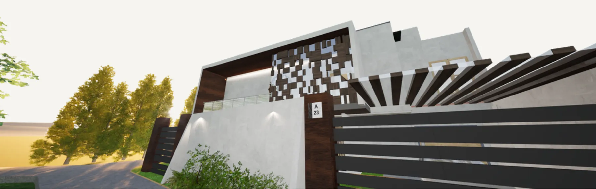
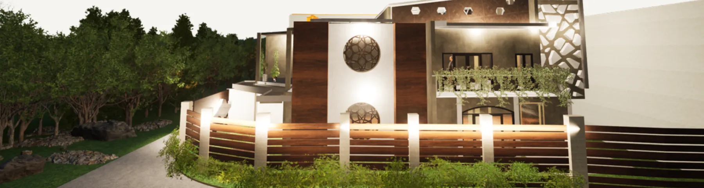
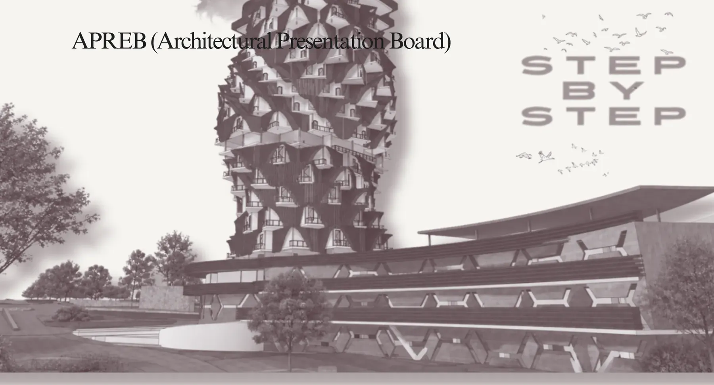
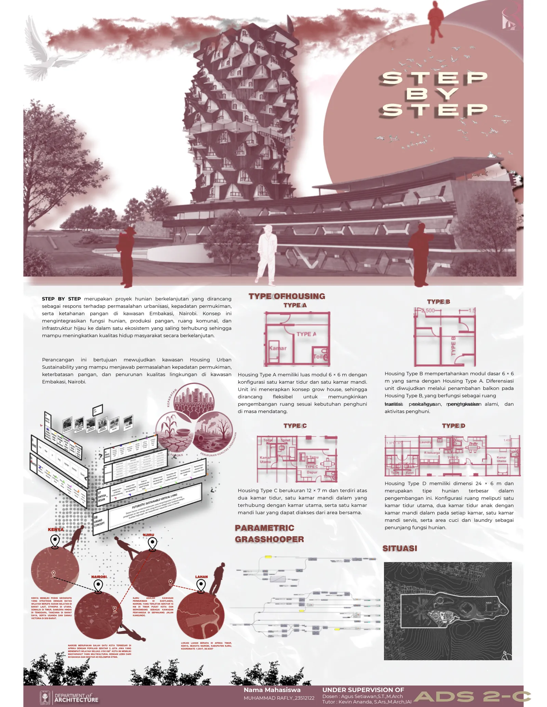
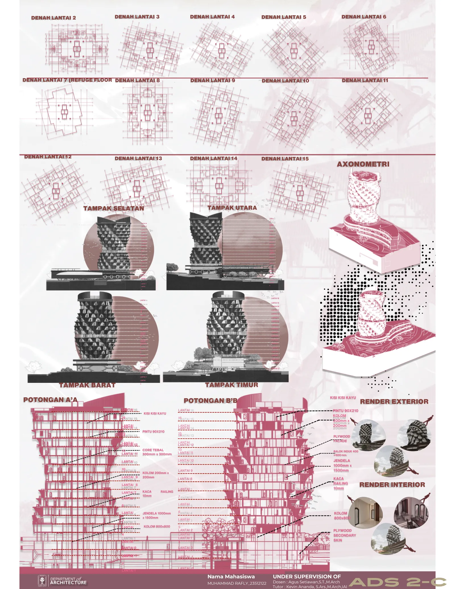
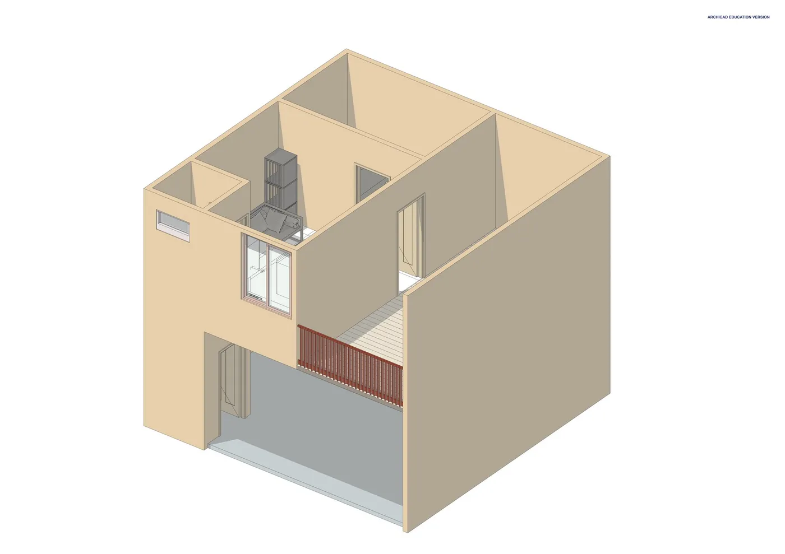

The brief
A public toilet for visitors at a tourist site, used by children, adults, people with disabilities and travellers. The design responds to sun, wind and noise, and sizes every fixture and the space between them for comfort.
By: Muhammad Rafly
Architecture student at Universitas Islam Indonesia, designing with sun, wind, and the people who use a space in mind.
This portfolio collects the academic works I developed across Studio Design 1, 2 and 3, Integrated Design Studio, and Architectural Design Studio 1 and 2: sketches, land art, nirmana, structures, a booth, a pavilion, a public toilet, a living unit, a creative hub and vertical housing.
Four semesters at the Department of Architecture, Faculty of Civil Engineering and Planning, Universitas Islam Indonesia. It is a record of my process and growth, and a way to keep pushing my design skills before the next challenge.
A public toilet for visitors at a tourist site, used by children, adults, people with disabilities and travellers. The design responds to sun, wind and noise, and sizes every fixture and the space between them for comfort.
A family of four from Padang, West Sumatra. The husband is a contractor who meets clients at home, the wife is a make-up artist, and the house has to hold both of their working lives plus their hobbies: reading and the gym.
The mass splits into three zones so guests, family and service never collide. The modern tropical concept brings in natural ventilation through timber and precast concrete.
Rp2.054.119.380
Total incl. 11% VAT, priced line by line from preparation and structure to finishes and landscape.
A space for collective expression for Yogyakarta's music community. Jazz grew out of improvisation, dialogue and spontaneity, and here it becomes architecture: fluid, open, connected spaces that bring performers and the audience close together.
A secondary skin of bengkirai timber on a steel frame plays rhythm and repetition with light. The bent GLULAM roof takes the shape of a guitar pick.
Embakasi, Nairobi, on the banks of the Ngong River. Rapid urbanisation is eating up farmland, while around 70% of Kenyans still depend on agriculture. Food security is the issue this design takes on.
Homes, urban farming, communal gardens and a rooftop farm form one ecosystem. The twisting tower was generated in Grasshopper, with a refuge floor at level 7.










Universitas Islam Indonesia
Senior high school
Junior high school